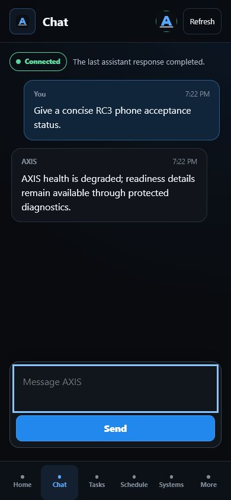

Coordinate protected actions
FastAPI routes sit behind roles, sessions, rate limits, and audit logging.
Local-first personal AI + engineering platform
AXIS connects local AI, memory and context, planning, engineering tools, and multiple interfaces inside one modular system. It is an active prototype built to turn separate capabilities into a coordinated, testable workflow.

AXIS started as a personal local assistant. As I added memory, planning, external services, interfaces, and engineering tools, the real challenge became systems integration: making each part useful without losing reliability, privacy, or control.
Requests move through explicit context, permission, execution, and verification stages.
Loopback-only inference with bounded retries, timeouts, and concurrency.
Authorized ingestion, keyword search, optional local embeddings, and provenance.
Deterministic services with protected actions and explicit degraded states.
Six of the strongest implemented or actively integrated systems.
FastAPI routes sit behind roles, sessions, rate limits, and audit logging.
Source permissions, chunk provenance, hybrid ranking, and keyword fallback keep retrieval bounded.
Tasks, due dates, urgency scoring, schedule gaps, and state recommendations share one workflow.
The approved model gateway stays on loopback and reports timeout, unavailable, and degraded states.
Calendar, Gmail, local voice, and responsive HUD clients are implemented but configuration-dependent.
Bounded prompts drive Blender generation, previews, model records, and preliminary mesh checks.
A coordinated request moves through eight explicit stages.
The project grows by improving controls and evidence—not by simply adding routes.
Role checks, approval states, lockdown behavior, and permissioned tool records separate planning from execution.
No. AXIS tracks success, partial success, denial, timeout, failure, and unverifiable evidence separately.
Newer routers, services, and core modules isolate ownership while legacy direct paths remain explicit migration work.
Loopback model gateways, source permissions, redaction, private runtime paths, and release allowlists define the boundary.
Five targeted failures expected protected routes to return HTTP 200. Investigation showed the current middleware correctly returned 403, so the stale expectations—not authentication—needed revision.
Each stage added a new integration problem and a new validation boundary.
I define AXIS requirements, architecture goals, integrations, and validation criteria, then use AI-assisted development tools to help implement and iterate. I review, integrate, test, troubleshoot, and validate the resulting system.